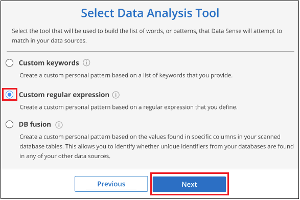
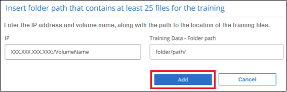

Notas de la versión
Notas de la versión
Añade identificadores de datos personales a tus análisis de clasificación de BlueXP
 Sugerir cambios
Sugerir cambios
La clasificación de BlueXP ofrece muchas formas de añadir una lista personalizada de «datos personales» que identificará la clasificación de BlueXP en futuros análisis, lo que te da una imagen completa sobre dónde residen los datos potencialmente confidenciales en todos los archivos de tu organización.
-
Puede agregar identificadores únicos basados en columnas específicas de las bases de datos que está analizando.
-
Puede agregar palabras clave personalizadas desde un archivo de texto: Estas palabras se identifican dentro de sus datos.
-
Puede agregar un patrón personal utilizando una expresión regular (regex) — el regex se agrega a los patrones predefinidos existentes.
-
Puede agregar categorías personalizadas para identificar dónde se encuentran determinadas categorías de información en los datos.
Todos estos mecanismos para agregar criterios de análisis personalizados se admiten en todos los idiomas.

|
Las capacidades descritas en esta sección sólo están disponibles si ha elegido realizar un análisis de clasificación completo en sus orígenes de datos. Los orígenes de datos que han tenido un análisis de sólo asignación no muestran detalles de nivel de archivo. |
Agregar identificadores de datos personales personalizados de las bases de datos
Una función que llamamos Data Fusion le permite analizar los datos de su organización para identificar si los identificadores únicos de sus bases de datos se encuentran en cualquiera de sus otros orígenes de datos. Puedes elegir los identificadores adicionales que buscará la clasificación de BlueXP en sus análisis si seleccionas una columna o columnas específicas en una tabla de base de datos. Por ejemplo, el siguiente diagrama muestra cómo se utilizan data Fusion para analizar los volúmenes, bloques y bases de datos en busca de apariciones de todos los ID de cliente de la base de datos de Oracle.

Como puede ver, se han encontrado dos ID de cliente únicos en dos volúmenes y en un bloque de S3. También se identificarán todas las coincidencias en las tablas de la base de datos.
Tenga en cuenta que, como escanea sus propias bases de datos, independientemente del idioma en el que se almacenen los datos se utilizará para identificar datos en futuros análisis de clasificación de BlueXP.
Debe tener "se añadió al menos un servidor de base de datos" A la clasificación de BlueXP antes de poder añadir orígenes de datos Fusion.
-
En la página Configuración, haga clic en Administrar Fusion de datos en la base de datos donde residen los datos de origen.

-
Haga clic en Agregar origen de Fusion de datos en la página siguiente.
-
En la página Add Data Fusion Source:
-
Seleccione el esquema de base de datos en el menú desplegable.
-
Introduzca el nombre de la tabla en ese esquema.
-
Introduzca la columna, o Columns, que contiene los identificadores únicos que desea utilizar.
Al agregar varias columnas, introduzca cada nombre de columna o nombre de vista de tabla en una línea independiente.

-
-
Haga clic en Agregar origen de Fusion de datos.

Después del siguiente análisis, los resultados incluirán esta nueva información en el Panel de cumplimiento en la sección "resultados personales" y en la página Investigación del filtro "datos personales". El nombre utilizado para el clasificador aparece en la lista de filtros, por ejemplo Customers.CustomerID.

Eliminar un origen de Data Fusion
Si en algún momento decide no analizar sus archivos mediante un origen de Data Fusion determinado, puede seleccionar la fila de origen en la página de inventario de Data Fusion y hacer clic en Eliminar origen de Data Fusion.

Agregar palabras clave personalizadas de una lista de palabras
Puedes añadir palabras clave personalizadas a la clasificación de BlueXP para que identifique dónde se encuentra esa información en tus datos. Para añadir las palabras clave solo tienes que introducir las palabras que quieras que reconozca la clasificación de BlueXP. Las palabras clave se agregan a las palabras clave predefinidas existentes que ya usa la clasificación de BlueXP, y los resultados serán visibles en la sección Patrones personales.
Por ejemplo, es posible que desee ver dónde se mencionan los nombres internos de producto en todos los archivos para asegurarse de que estos nombres no están accesibles en ubicaciones que no son seguras.
Después de actualizar las palabras clave personalizadas, la clasificación de BlueXP reiniciará el análisis de todas las fuentes de datos. Una vez que el análisis se haya completado, los nuevos resultados aparecerán en el panel de cumplimiento de la clasificación de BlueXP, en la sección «Resultados personales», y en la página de investigación del filtro «Datos personales».
-
En la ficha Classification settings, haga clic en Agregar nuevo clasificador para iniciar el asistente Add Custom Classifier.

-
En la página Select type, escriba el nombre del clasificador, proporcione una breve descripción, seleccione Identificador personal y, a continuación, haga clic en Siguiente.
El nombre que introduzcas aparecerá en la interfaz de usuario de clasificación de BlueXP como encabezado de los archivos escaneados que coincidan con los requisitos del clasificador, así como el nombre del filtro en la página de investigación.
También puede marcar la casilla "Mask Detected results in the system" para que el resultado completo no aparezca en la interfaz de usuario. Por ejemplo, puede que desee hacer esto para ocultar los números completos de la tarjeta de crédito o datos personales similares (la máscara aparecerá en la IU de esta manera: "Pase:[*] pase:[] pase:[] pase:[*]" 3434).

-
En la página Select Data Analysis Tool, seleccione palabras clave personalizadas como el método que desea utilizar para definir el clasificador y, a continuación, haga clic en Siguiente.

-
En la página Create Logic, introduzca las palabras clave que desee reconocer - cada palabra en una línea separada - y haga clic en Validar.
La siguiente captura de pantalla muestra los nombres de productos internos (diferentes tipos de búhos). La búsqueda de clasificación de BlueXP para estos elementos no distingue mayúsculas de minúsculas.

-
Haz clic en Listo y la clasificación de BlueXP comienza a volver a analizar tus datos.
Una vez finalizada la exploración, los resultados incluirán esta nueva información en el Panel de cumplimiento en la sección "resultados personales" y en la página Investigación del filtro "datos personales".

Como puede ver, el nombre del clasificador se utiliza como nombre en el panel resultados personales. De esta manera puede activar muchos grupos diferentes de palabras clave y ver los resultados de cada grupo.
Agregue identificadores de datos personales personalizados mediante un regex
Puede agregar un patrón personal para identificar información específica de los datos mediante una expresión regular personalizada (regex). Esto le permite crear un nuevo regex personalizado para identificar nuevos elementos de información personal que aún no existen en el sistema. El regex se agrega a los patrones predefinidos existentes que ya usa la clasificación de BlueXP, y los resultados serán visibles en la sección Patrones personales.
Por ejemplo, puede que desee ver dónde se mencionan los ID de producto internos en todos sus archivos. Si el ID de producto tiene una estructura clara, por ejemplo, es un número de 12 dígitos que comienza con 201, puede utilizar la característica personalizada regex para buscarla en sus archivos. La expresión regular de este ejemplo es \b201\d{9}\b.
Después de añadir el regex, la clasificación de BlueXP reiniciará el análisis de todas las fuentes de datos. Una vez que el análisis se haya completado, los nuevos resultados aparecerán en el panel de cumplimiento de la clasificación de BlueXP, en la sección «Resultados personales», y en la página de investigación del filtro «Datos personales».
Consulte https://regex101.com/ si necesita ayuda para construir la expresión regular que necesita. Elige Python para ver los tipos de resultados que la clasificación de BlueXP coincidirá con la expresión regular.
|
|
Actualmente no permitimos el uso de banderas de patrón al crear un regex - esto significa que no debe usar '/'. |
-
En la ficha Classification settings, haga clic en Agregar nuevo clasificador para iniciar el asistente Add Custom Classifier.
-
En la página Select type, escriba el nombre del clasificador, proporcione una breve descripción, seleccione Identificador personal y, a continuación, haga clic en Siguiente.
El nombre que introduzcas aparecerá en la interfaz de usuario de clasificación de BlueXP como encabezado de los archivos escaneados que coincidan con los requisitos del clasificador, así como el nombre del filtro en la página de investigación. También puede marcar la casilla "Mask Detected results in the system" para que el resultado completo no aparezca en la interfaz de usuario. Por ejemplo, puede que desee hacer esto para ocultar los números completos de la tarjeta de crédito o datos personales similares.

-
En la página Select Data Analysis Tool, seleccione expresión regular personalizada como el método que desea utilizar para definir el clasificador y, a continuación, haga clic en Siguiente.

-
En la página Create Logic, introduzca la expresión regular y las palabras de proximidad y haga clic en hecho.
-
Puede introducir cualquier expresión regular legal. Haz clic en el botón Validar para que la clasificación de BlueXP verifique que la expresión regular es válida y que no es demasiado amplia, lo que significa que devolverá demasiados resultados.
-
Opcionalmente, puede introducir algunas palabras de proximidad para ayudar a refinar la precisión de los resultados. Estas son palabras que normalmente se encuentran dentro de los 300 caracteres del patrón que está buscando (antes o después del patrón encontrado). Introduzca cada palabra o frase en una línea diferente.

-
Se añade el clasificador y la clasificación de BlueXP empieza a volver a analizar todas tus fuentes de datos. Volverá a la página Clasificadores personalizados, donde podrá ver el número de archivos que coinciden con el nuevo clasificador. Los resultados del análisis de todos los orígenes de datos tardarán un poco en función del número de archivos que se deban analizar.

Agregar categorías personalizadas
La clasificación de BlueXP toma los datos que escanea y los divide en distintos tipos de categorías. Las categorías son temas basados en el análisis de inteligencia artificial del contenido y los metadatos de cada archivo. "Consulte la lista de categorías predefinidas".
Las categorías pueden ayudarle a entender lo que está pasando con sus datos mostrándole los tipos de información que tiene. Por ejemplo, una categoría como resume o Employee Contracts puede incluir datos confidenciales. Cuando investiga los resultados, puede que encuentre que los contratos de empleados están almacenados en una ubicación insegura. Entonces puede corregir ese problema.
Puedes agregar categorías personalizadas a la clasificación de BlueXP para que puedas identificar qué categorías de información son únicas para el conjunto de datos se encuentran en tus datos. Puedes añadir cada categoría creando archivos de «entrenamiento» que contengan las categorías de datos que quieres identificar y, a continuación, hacer que la clasificación de BlueXP analice esos archivos para «aprender» a través de la IA para que pueda identificar esos datos en tus fuentes de datos. Las categorías se añaden a las categorías predefinidas existentes que ya identifica la clasificación de BlueXP y los resultados se pueden ver en la sección Categorías.
Por ejemplo, es posible que desee ver dónde se encuentran los archivos de instalación comprimidos en formato .gz en sus archivos para que pueda eliminarlos, si es necesario.
Después de actualizar las categorías personalizadas, la clasificación de BlueXP reiniciará el análisis de todas las fuentes de datos. Una vez que se haya completado el análisis, los nuevos resultados aparecerán en la consola de cumplimiento de la clasificación de BlueXP, en la sección «Categorías» y en la página de investigación del filtro «Categoría». "Vea cómo ver archivos por categorías".
Tendrás que crear un mínimo de 25 archivos de entrenamiento que contengan muestras de las categorías de datos que quieres que reconozca la clasificación de BlueXP. Se admiten los siguientes tipos de archivo:
.CSV, .DOC, .DOCX, .GZ, .JSON, .PDF, .PPTX, .RTF, .TXT, .XLS, .XLSX, Docs, Sheets, and Slides
Los archivos deben tener un mínimo de 100 bytes y deben encontrarse en una carpeta a la que se pueda acceder mediante la clasificación de BlueXP.
-
En la ficha Classification settings, haga clic en Agregar nuevo clasificador para iniciar el asistente Add Custom Classifier.
-
En la página Select type, introduzca el nombre del clasificador, proporcione una breve descripción, seleccione Categoría y, a continuación, haga clic en Siguiente.
El nombre que introduzcas aparecerá en la interfaz de usuario de clasificación de BlueXP como encabezado de los archivos escaneados que coincidan con la categoría de datos que vas a definir, y como nombre del filtro en la página de investigación.

-
En la página Create Logic, asegúrese de que tiene preparados los archivos de aprendizaje y, a continuación, haga clic en Seleccionar archivos.

-
Introduzca la dirección IP del volumen y la ruta de acceso donde se encuentran los archivos de entrenamiento y haga clic en Agregar.

-
Comprueba que los archivos de entrenamiento se hayan reconocido mediante la clasificación de BlueXP. Haga clic en x para eliminar los archivos de entrenamiento que no cumplan los requisitos. A continuación, haga clic en hecho.

La nueva categoría se crea tal y como se define en los archivos de entrenamiento y se agrega a la clasificación de BlueXP. A continuación, la clasificación de BlueXP empieza a volver a analizar todas tus fuentes de datos para identificar los archivos que se adaptan a esta nueva categoría. Volverá a la página Clasificadores personalizados, donde podrá ver el número de archivos que coinciden con la nueva categoría. Los resultados del análisis de todos los orígenes de datos tardarán un poco en función del número de archivos que se deban analizar.
Vea los resultados de sus clasificadores personalizados
Puede ver los resultados desde cualquiera de los clasificadores personalizados en el Panel de cumplimiento y en la página Investigación. Por ejemplo, esta captura de pantalla muestra la información coincidente en el Panel de cumplimiento en la sección "resultados personales".

Haga clic en la  Para ver los resultados detallados en la página Investigación.
Para ver los resultados detallados en la página Investigación.
Además, todos los resultados del clasificador personalizado aparecen en la ficha Clasificadores personalizados y los 6 resultados superiores del clasificador personalizado se muestran en el Panel de cumplimiento, como se muestra a continuación.

Administrar clasificadores personalizados
Puede cambiar cualquiera de los clasificadores personalizados que haya creado utilizando el botón Editar clasificador.

|
No puede editar los clasificadores de Data Fusion en este momento. |
Y si decides en algún momento posterior que no necesitas la clasificación de BlueXP para identificar los patrones personalizados que agregaste, puedes usar el botón Eliminar clasificador para eliminar cada elemento.